Gastronomia
Comida Típica
Cecina
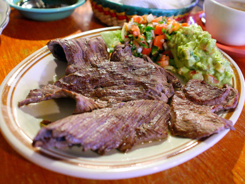Un platillo por el que después de probarlo querrás volver Atlixco, la tradicional cecina de Atlixco, elaborado por cecineros del municipio de manera artesanal este platillo es básico dentro de la cocina atlixquense, acompañado de sus guarniciones de queso, aguacate y nopales.
Taco Placero

Mejores no encontraras en Atlixco rellenos de cualquier guisado simple, combinado o no con una dosis de arroz a la mexicana; los hay de chicharrón prensado, tinga, huevos duros, nopales con huevo, longaniza con papas, chicharrón guisado en salsa verde o roja, bistec con nopales, costilla de puerco en adobo, entre otros.
Enchiladas
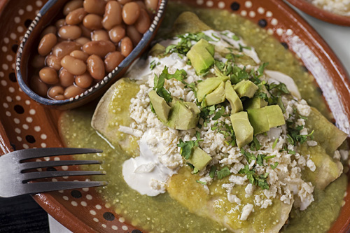Los rollitos que se forman uno tras otro para cubrirse de una delicada salsa. Rellenas de pollo, bañadas en salsa verde, roja o mole que se acompañan de lechuga, aguacate, crema, queso, rábano y cebolla, listos para degustarse calientitos y bien bañaditos.
Barbacoa
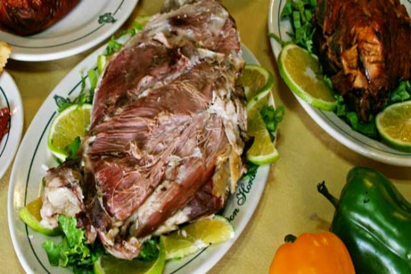El estilo de carne con un sabor inigualable que te hará chupar los dedos. La carne de borrego hecha en barbacoa es uno de los estilos de popularidad en el centro del país. Elaborada dentro de la tierra con hojas de maguey alcanza su mejor punto en sabor; lo puedes preparar en taco o simplemente con una rica salsa y aguacate. No olvides el consomé que se produce al cocinar la barbacoa.
Mole Poblano
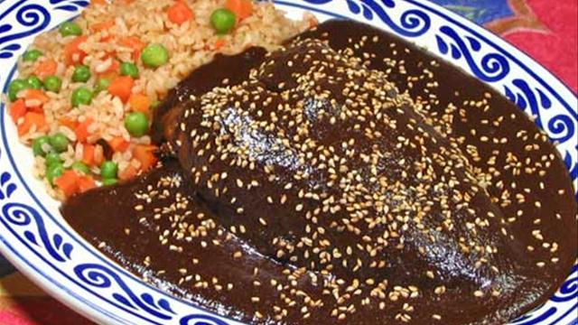El platillo por excelencia en fiestas coloniales que muestra la creatividad de las familias poblanas, delicioso mole dulce representativo de Puebla, está hecho a base de varios chiles y condimentos, agregando una caricia de chocolate. Su consistencia espesa se acompaña comúnmente de una pieza de guajolote o pollo y se agrada a la vista decorándolo con ajonjolí tostado.
Mole de Olla

Suculento caldo hecho a base de carne de res, sazonado en salsa de jitomate con chile costeño y perfumado con ramas de cilantro. Este platillo se acompaña de ejotes y calabacitas para servirse caliente en un plato al que se le agrega como toque final el jugo de limón al gusto.
Mole de Panza
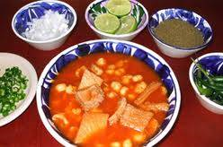Este caldoso plato hecho con panza se puede encontrar en negocios de antojitos mexicanos o fondas de nuestra bella ciudad.
Chile en nogada
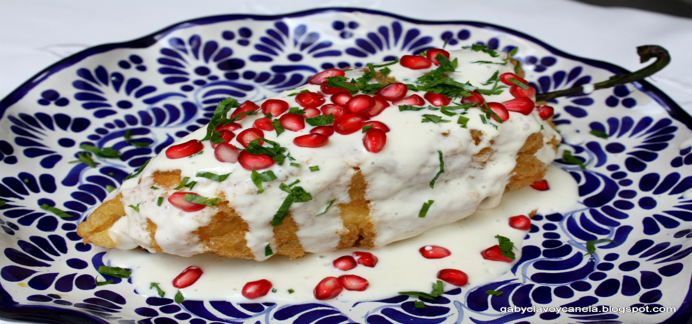Platillo de temporada que envuelve parte de la historia y triunfo de nuestro México. Representativo del estado de Puebla, tiene su origen en los tiempos de Independencia en homenaje a Agustín de Iturbide. Los colores de la bandera se aprecian con armonía y perfección en este manjar por los meses de julio y agosto, ya que sus ingredientes que utilizan para el relleno se producen solo en esta temporada.
Antojitos
Cemitas
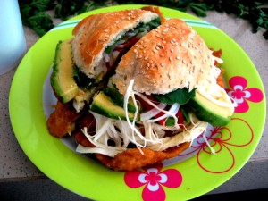Un crujiente y dorado pan redondo con ajonjolí en decoración es la cubierta de ingredientes comunes como el quesillo, pápalo, chipotle, cebolla, aguacate, aceite de olivo y según el gusto milanesa, “carnitas”, pata, jamón o carne enchilada que en conjunto dan origen al suculento plato de la región similar a la torta.
Chalupas
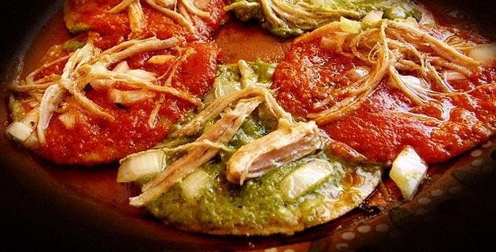Las chalupas son tortillas fritas cubiertas de salsa, cebolla y carne de res/puerco/pollo deshebrada con salsa roja o verde, una verdadera delicia.
Pambazos
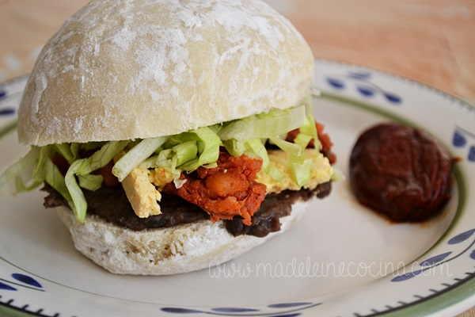Te gusta el pan, pues este es un pan completamente liso parecido a la telera (bollo) rellena de chorizo o longaniza y posteriormente bañada en salsa de chile guajillo o ancho, listo para satisfacer tu paladar.
Molotes
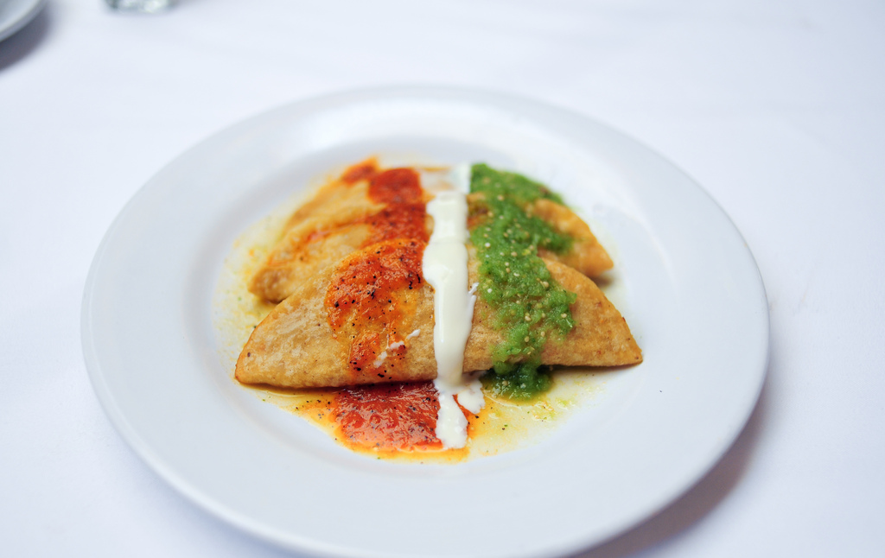Son una derivación de las gorditas, quesadillas o empanadas cerradas. Los molotes son hechos a mano con masa de maíz que según el gusto se puede rellenar con papa, sesos, queso, requesón o tinga, para después freírse y disfrutar de su crujiente sabor y en Atlixco son toda una tradición.
Tostadas
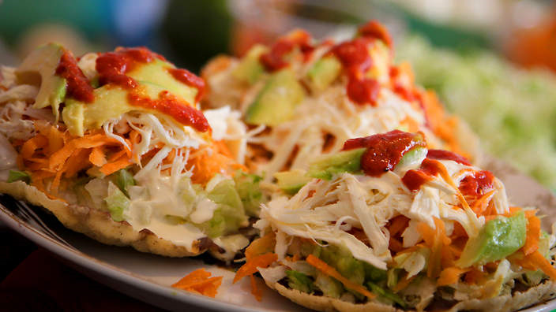Este es un antojito que se aprecia por su fácil preparación y gran satisfacción en su sabor, siendo una sencilla tortilla frita se perfecciona añadiendo frijoles, lechuga, queso, crema, salsa y complementando su mismo nombre, un ingrediente electo por su degustador, el cual puede ser pollo, lengua, pata o quesillo.
Tamales
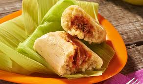De Comino tradicional de la región de Atlixco, elaborado con maíz, jitomate y guajillo para la salsa, manteca y cominos el cual le da ese sabor muy especial. De canario, Estos tamales se preparan con harina de arroz, mantequilla, azúcar y yemas de huevo. Es una receta diferente a la de los tamales tradicionales.
Atole de Cacauhate
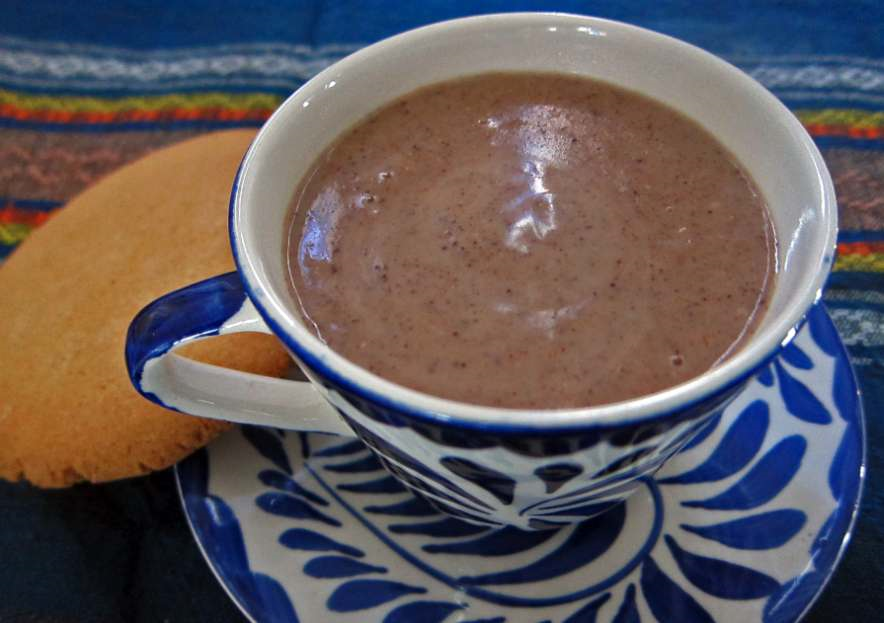El gusto por el atole recibe una recompensa con este de cacahuate, que aporta algo diferente. Ideal para comer unos tamales, e incluso un pan de agua, hojaldra o cuernitos. Claro es para una reunión familiar o fiesta, elaborado con masa, leche y cacahuate
Esquites y Elotes
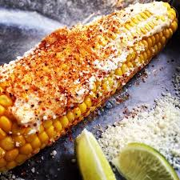Muy populares en todo el país la palabra esquites son los granos del elote hervidos en agua con sal, epazote y otras hierbas de olor, servidos en un vaso, se toman calientes y con cuchara, y normalmente se les agrega jugo de limón, chile, y sal. Se le puede agregar mayonesa o crema y queso canasta rallado. De una olla enorme de agua muy caliente y valiéndose de grandes tenazas extrae una pieza de maíz cocido a la perfección, la sacude para quitarle el exceso de agua y le inserta un palito de madera para poderla agarrar. Después prepara el elote al gusto del cliente con mayonesa, queso rallado, sal, limón, chile en polvo… El comprador come su elote primero con los ojos en anticipación de la primera probada — misma que le mancha la barba y los cachetes de todo lo que cubre al maíz. ¡Ay, qué rico! El cliente se va caminando y comiendo, feliz como una lombriz.